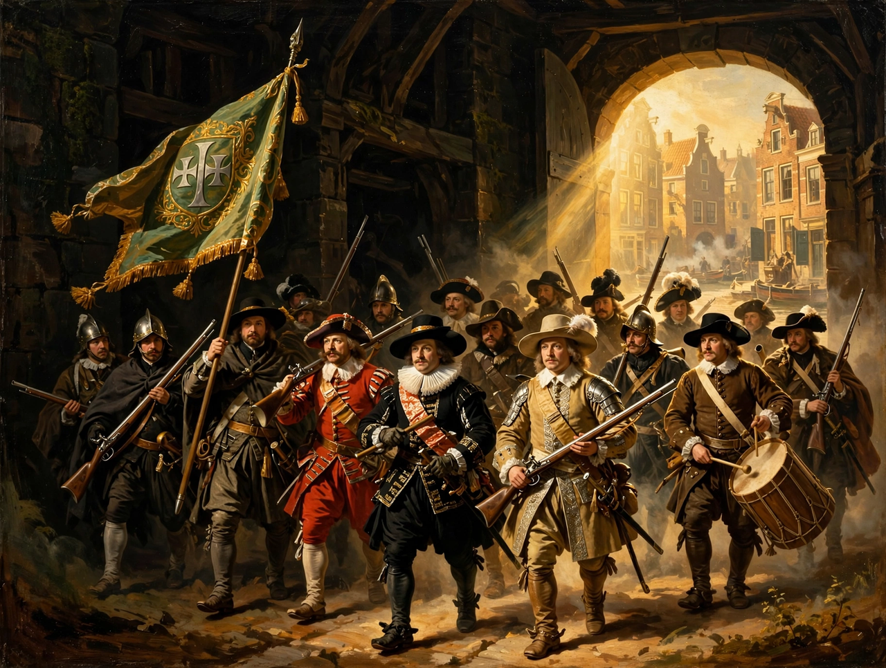

Rembrandt

The Night Watch (1642): a civic guard company spilling out of shadow into golden light, Rembrandt's largest and most famous canvasRembrandt Harmenszoon van Rijn (15 July 1606 – 4 October 1669), usually simply known as Rembrandt, was a Dutch Golden Age painter, printmaker and draughtsman. He is generally considered one of the greatest visual artists in the history of art and the most important in Dutch art history. Unlike most Dutch masters of the 17th century, Rembrandt's works depict a wide range of styles and subject matter, from portraits and self-portraits to landscapes, genre scenes, allegorical and historical scenes, biblical themes and animal studies.
Rembrandt achieved youthful success as a portrait painter in Amsterdam but later years were marked by personal tragedy and financial hardship: he was declared bankrupt in 1656 and died in relative poverty, despite remaining in demand as an artist. His roughly 80 self-portraits form an intimate visual autobiography unmatched in art.
Technique and major works
His command of light and shadow (chiaroscuro), impasto paint handling and psychological insight set him apart. Major works include The Night Watch (1642), The Anatomy Lesson of Dr Nicolaes Tulp (1632), Bathsheba at Her Bath (1654), The Return of the Prodigal Son (c. 1669) and the late masterpiece The Jewish Bride. His etchings, such as The Three Crosses, are equally celebrated.